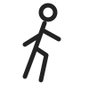
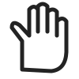

MATCHBOOK LEARNING · MORNING MEETING
MATCHBOOK LEARNING · MORNING MEETINGShow-Me Cards · Tarjetas para mostrar
Cut on the lines. Students hold up a card during Connect · Share so every student answers at the same time, with or without speaking.
 Choice AOpción A
Choice AOpción A I can pointPuedo señalar
I can pointPuedo señalarSafe, Respectful, Responsible
Name: _____________________


Students: Color the picture that shows each rule. Show one rule with your body.
Estudiantes: Colorea el dibujo que muestra cada regla. Muestra una regla con tu cuerpo.
Seguro: camina
Respetuoso: silencio
Responsable: mis cosas
My commitment: Today I will practice being…
Hoy voy a practicar ser…
Family chat: Show your family how we walk in line at school.
Charla en familia: Muéstrale a tu familia cómo caminamos en la fila en la escuela.
Point, say, draw, dictate, or write.
My Voice Sizes
Name: _____________________
Students: Match each place to the right voice size. Practice your whisper voice.
Estudiantes: Une cada lugar con el tamaño de voz correcto. Practica tu voz de secreto.
Pasillo: secreto
Lectura: suave

Recreo: voz de afuera
My commitment: Today in the hallway, my voice will be…
Hoy en el pasillo, mi voz será…
Family chat: When do we use a whisper voice at home?
Charla en familia: ¿Cuándo usamos voz de secreto en casa?
Point, say, draw, dictate, or write.
Everything Has a Home
Name: _____________________


Students: Draw a line from each thing to its home. Show how you clean up.
Estudiantes: Dibuja una línea de cada cosa a su lugar. Muestra cómo limpias.
My commitment: I take care of our things by…
Cuido nuestras cosas al…
Family chat: Where does your backpack go at home?
Charla en familia: ¿Dónde va tu mochila en casa?
Point, say, draw, dictate, or write.
Break, Then Try Again
Name: _____________________


Students: Color the steps for asking for a break. Draw yourself trying again.
Estudiantes: Colorea los pasos para pedir un descanso. Dibújate intentando otra vez.
Levanta la mano
Pide con amabilidad
Intenta otra vez
My commitment: When work is hard, I can…
Cuando el trabajo es difícil, puedo…
Family chat: What is something you can’t do yet but are learning?
Charla en familia: ¿Qué es algo que todavía no puedes hacer pero estás aprendiendo?
Point, say, draw, dictate, or write.